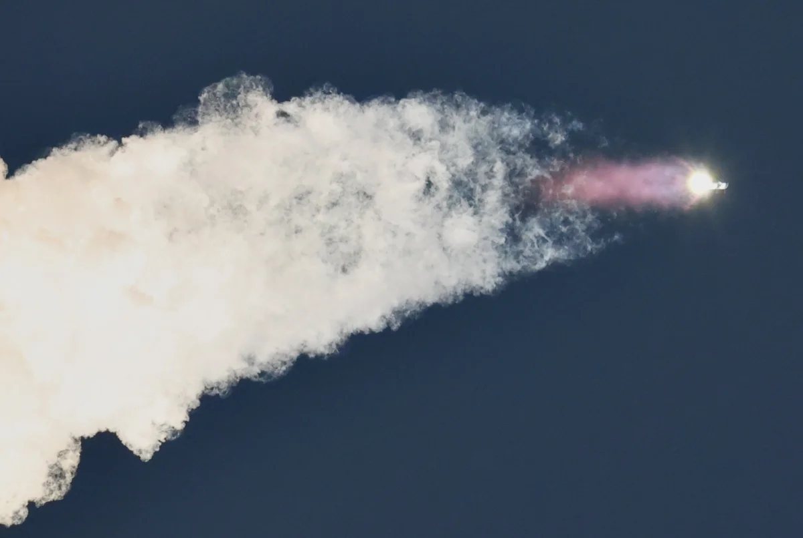

Overview
Starship is SpaceX's two-stage launch system. It consists of the Super Heavy booster and an upper stage, also called Starship. Both stages use Raptor engines powered by liquid methane and liquid oxygen.

.jpg){kind=link}
Two stages
Super Heavy
Super Heavy provides the thrust needed for liftoff. Its 33 Raptor engines lift the full vehicle. After separation, the booster is designed to return to the launch site.
Starship
The upper stage continues the flight with its own engines and carries the payload. SpaceX is developing different versions for missions such as carrying cargo and transporting people.
Reuse
SpaceX's goal is to recover and fly both stages again. Reusing the hardware is intended to reduce the amount of new equipment needed for each launch.
On , the launch tower at Starbase caught a returning Super Heavy booster during the fifth flight test. The upper stage continued its flight, reentered the atmosphere, and splashed down in the Indian Ocean. That test demonstrated a booster catch; the upper stage was not recovered.
Moon missions
NASA is working with SpaceX on Starship Human Landing System, a version intended to carry astronauts between lunar orbit and the Moon's surface. Supporting those missions also involves work on storing and transferring extremely cold propellant in space.